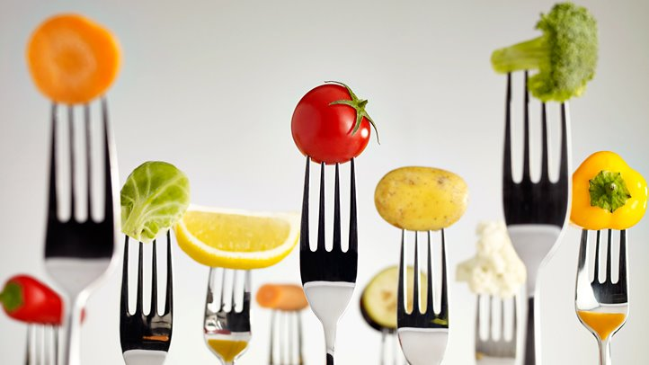
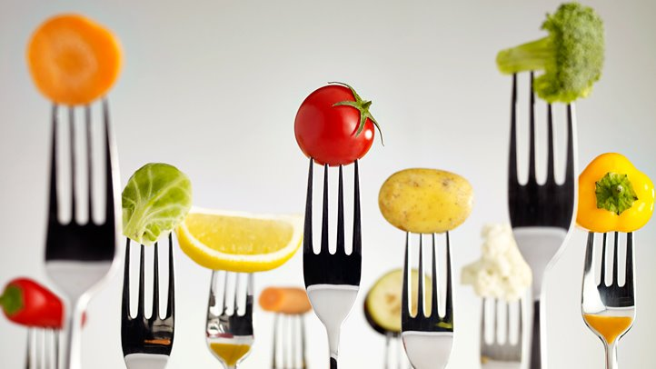

Poverty and hunger in America often go hand in hand, but poverty is not the ultimate determinant of food insecurity. People living above the poverty line are often at risk of hunger
as well. Research demonstrates that unemployment, rather than poverty, is a better predictor of food insecurity among people living in the United States.
Now your action can help our kids who is in need,No only help them to eat also eat healthy with a healhty life style!
We can help
After witness many of friends and family members suffered from the illness which cause by unhealthy eating habit, I really wish that I could have aware of how important the eating habit and lifestyle can help to prevent illness,
by making simple changes of your daily life could actually extend your lifespan and quality of your life. Especially for kinds, when they dont know what is good for them, they choose what taste better. Which might cause them to build a bad
eating haibit and life style which could have great impact in their future
 
